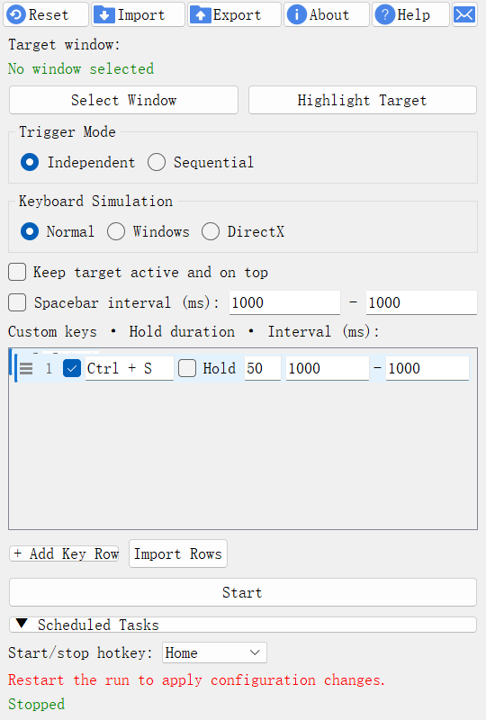

Repeat a key every second on Windows
Use KeyPresser to type the digit 1 about once per second in a blank Notepad document. A blank document makes it easy to confirm the interval before using your own shortcut.
Set a 1,000 ms interval
- Open a blank Notepad document. From the KeyPresser home screen, open KeyPresser, then use Select Window to choose Notepad.
- Choose Independent under Trigger Mode and Normal under Keyboard Simulation.
- Enable one row under Custom keys. Activate its key field and press 1 to capture the digit. Leave Hold unchecked and turn off any other rows and the separate spacebar option.
- Set the two interval fields on that row to 1000 and 1000. Both values are in milliseconds.
- Click inside the blank document to give it focus. Press the shortcut shown next to Start/stop hotkey, which is Home in the screenshot. Let a few digits appear, then press the same shortcut to stop.

Adjust the timing or repeat a shortcut
To repeat every two seconds, enter 2000 in both interval fields. Different bounds allow the delay to vary. Hold duration controls how long each press lasts. Use the interval fields to control the pause between presses.
To repeat a shortcut, stop the run first, capture the key combination in the same row, and test it in the intended application. Choose Sequential when enabled rows should run in order. In Independent mode, each enabled row has its own timer.
If the digit does not appear
Make sure the document has focus, the correct window is selected, and the key row is enabled. Check the configured start and stop hotkey. Normal keyboard simulation uses foreground input, so keep the editor in front during this test.
To repeat a sequence of mouse and keyboard actions, follow the Notepad++ recording and playback tutorial.